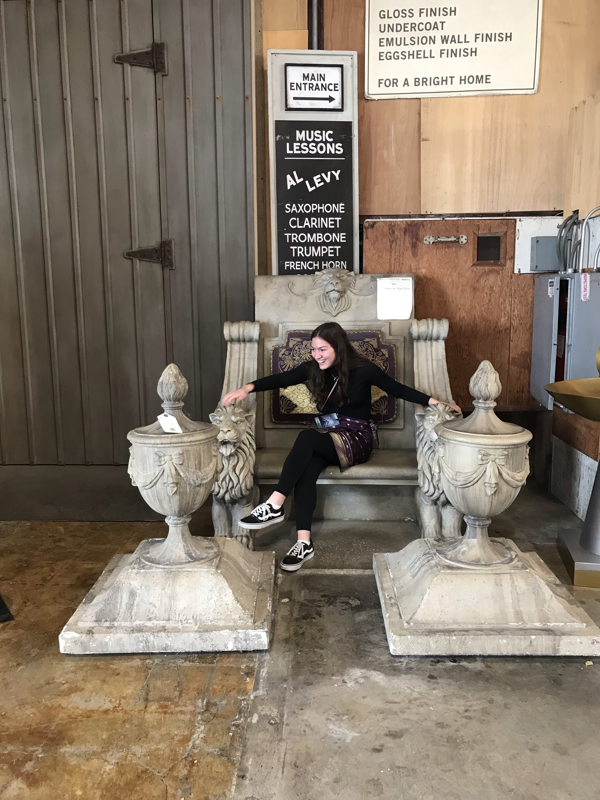
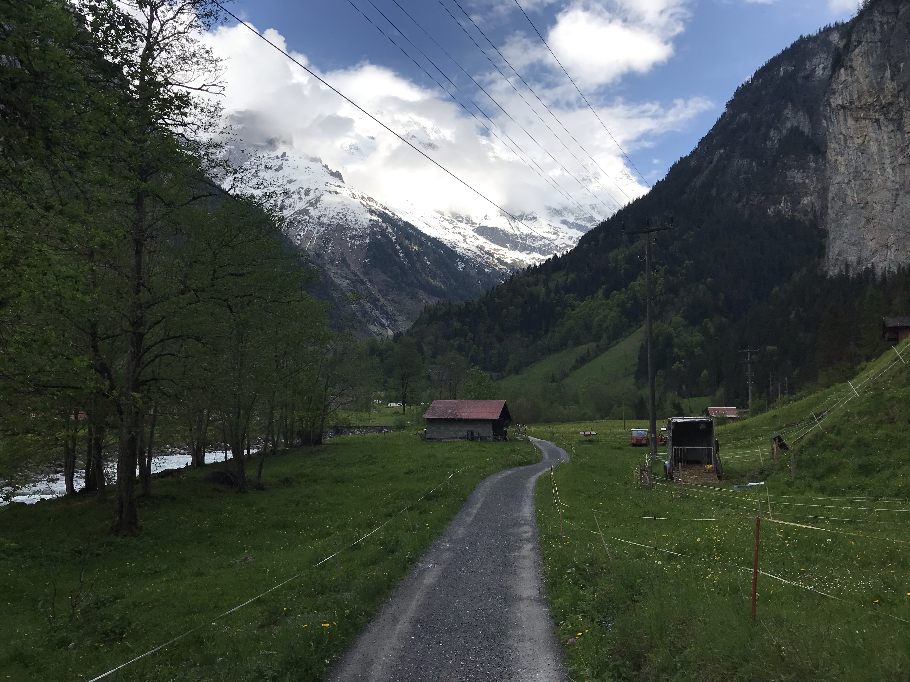

I like baking homemade pies, reading the classics, and hiking.
The w3schools HTML tutorial has proved very useful for learning how to make basic webpages! To make this webpage I only had to refer to this site. Learning new things is fun!
The w3schools JavaScript tutorial is supposed to come in handy very soon! How mysterious... From the website I learned that 'JavaScript is the programming language of HTML and the Web.'
This is my favorite recipe for homemade pumpkin pie from pumpkins! It is now a family favorite for Thanksgiving time.
This a link to Project Gutenberg's Marcus Aurelius' Meditations. I love Project Gutenberg for making books like these free to the public. This book is one of my favorites. The work was written by the Roman emperor Marcus Aurelius. Not intended for the public Aurelius writes his thoughts down as he leads Rome. His writings also ponder Stoic philosophy.
This is the actor Joaquin Phoenix portraying Commodus, the evil son of Roman emperor Marcus Aurelius, in the movie Gladiator. In real life Commodus was not as treacherous, though not so great, either. Here, Joaquin Phoenix as Commodus sits and sticks his tongue out as he watches the gladiators fight in the arena.
Here is me 'fan-girl'-ing sitting in the same seat that sat Joaquin Phoenix. This photo was taken at the conclusion of the Paramount Pictures studio tour in LA in the prop room. I was so excited! And I had just seen Dr. Phil and his wife leaving the studio!!
This is a picture I took on a path in Lauterbrunnen Valley in Switzerland, one of my favorite places in the world. The views of the Alps from the bottom of the valley were spectacular. Lauterbrunnen has 72 waterfalls, which are spotted along the rocky cliffs.
My favorite search engine